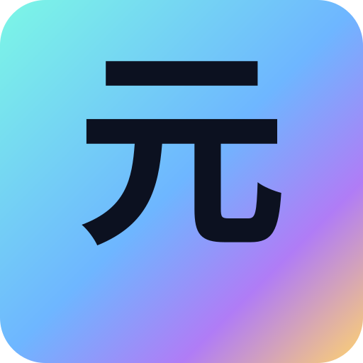

元氣精神
周哈里窗自我探索測驗
周哈里窗｜自我探索測驗
40 題量表（1～5 分）｜完成後顯示四象限分數、雷達圖與總和評量｜支援結果匯出
進度
← 上一頁
第 1 / 4 頁
下一頁 →
查看結果 ✅
還有題目未作答，請完成本頁所有題目。
結果與總和評量
每象限滿分 50 分（10 題 × 5 分）。下方同時顯示平均分長條與雷達圖。
開放我 Open
隱藏我 Hidden
盲目我 Blind
未知我 Unknown
雷達圖（指數 0～5）
四軸：開放、
防衛
、
盲點
、探索。防衛／盲點為「越低越好」，探索 = 6 − 未知平均。
開放指數 = Open 平均
防衛指數 = Hidden 平均
盲點指數 = Blind 平均
探索指數 = 6 − Unknown 平均
你的總和評量
匯出結果 PNG
匯出結果 PDF
下載 JSON（分數與指數）
提示：此工具僅供自我覺察與團隊對話，不做臨床診斷之用。